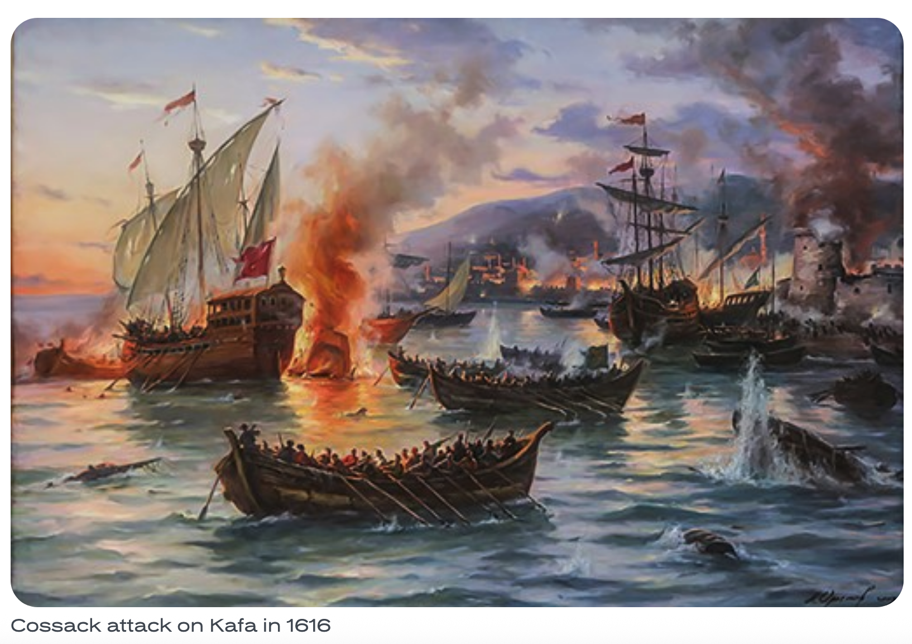

Cossacks sustained themselves via multiple trades (fished, hunted, even farmed, & served as soldiers for political authorities) but raid economy was one of their distinct features as a community. A raid economy is a system in which a community obtains a significant portion of its wealth through organized raids on other communities, trade routes,rather than primarily through agriculture, or manufacturing.

Fig.1 Cossacks Attack Crimean city of Kafa in 1616 (the major slave trade port on the Black Sea)
See also other examples of raid economy communities: vikings, pirates of the Carribean, pirates in Somali territorial waters
Ukrainian and Don Cossacks attacked Ottoman and Crimean Tatar coastal settlements, fortresses, and ships, seizing goods and other valuables.
(1) Captives and ransom: Captured people could be ransomed or sold into slavery, although Cossacks also fought to free Christian captives held in Ottoman and Crimean Tatar territories.
(2) Maritime expeditions (piracy): Cossacks used swift, shallow-draft boats called chaiky (seagulls) to attack Ottoman targets along the Black Sea coast.
Economy: Because many of cossack raids happened in steppe (an Eastern European counterpart of North American prairie), horse breading was a common and respectable economic practice amond cossacks. Horse breading was respectable in contrast to a less respectable (for the cossacks) traditional peasants' agriculture in Russia, Belarus, Lithuania, Poland.